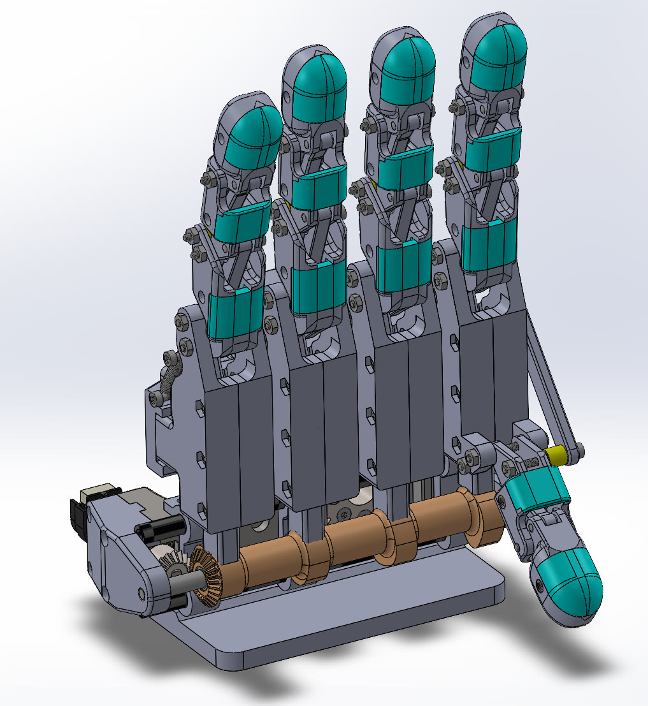

Robotic hands
Underactuated Robotic Hand for Shoulder Massaging
A mechanically compliant hand that produces massage motions with two actuators and coupled finger linkages.
Overview
This underactuated robotic hand explores a small actuator set for shoulder massaging and physical interaction. One Dynamixel servo and one N20 motor drive the mechanism, producing different massage motions through linked finger movement and mechanical compliance.
The design uses a double four-bar linkage and passive springs to provide compliant finger motion. An offset cam changes the initial contact positions, while the Dynamixel servo closes the fingers. Contact forces adapt through the mechanism’s compliance and kinematic coupling, without explicit force control.
Mechanism design
The hand combines the finger-closing motion with adjustment of the initial contact geometry. These two actuation paths produce the combined hand motion shown in the prototype demonstration.
The CAD model and thumb-linkage demonstration show how the linked mechanism coordinates motion within the hand. Passive elements provide compliance as the fingers close, allowing the structure itself to participate in adapting the contact.
The accompanying demonstrations show both the small-servo-only movement and the full hand’s combined motion.
